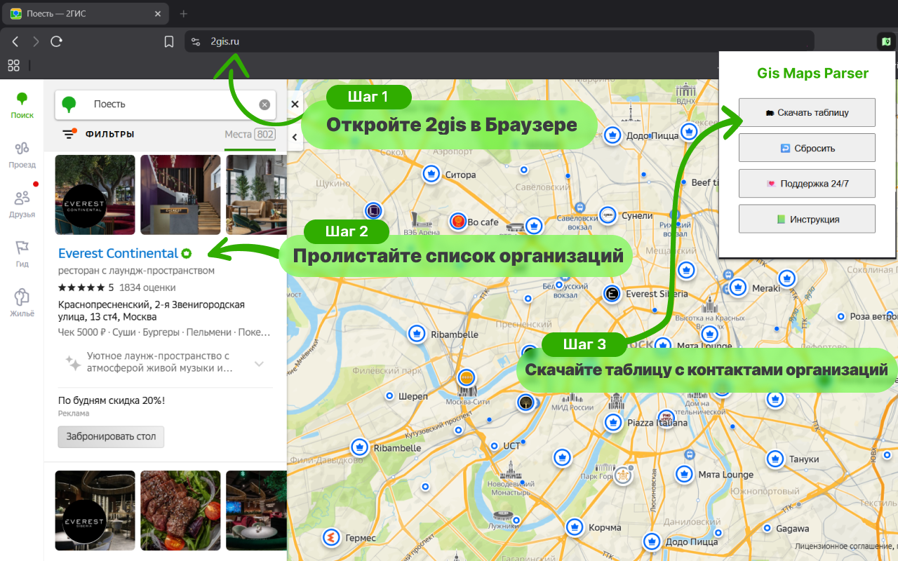
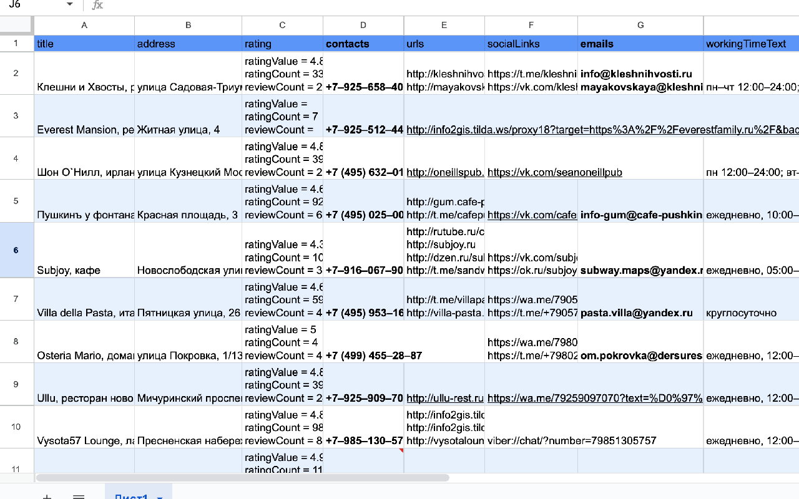

Открывайте карточки компаний на 2гис картах — 2gis parser автоматически соберёт контакты. Скачивайте готовую XLSX-таблицу с телефонами, email, сайтами и графиком работы в один клик.
Бесплатный демо-режим · до 15 строк за раз · без регистрации

Работает на всех локальных доменах 2ГИС
Шесть причин, почему маркетологи и продажники используют 2 гис парсер каждый день.
Никаких кликов «сохранить». Открыли карточку — данные уже в таблице.
Готовая Excel-таблица со всеми полями. Открывается в Excel, Numbers, Google Sheets.
Видно прямо в браузере, сколько организаций уже собрано в текущей сессии.
Всё хранится локально в браузере. Ничего не уходит на сторонние серверы.
Россия, Казахстан, Кыргызстан, ОАЭ, Узбекистан — парсинг 2 гис работает везде.
Создавайте сколько угодно выгрузок. Лимит — только на размер одной таблицы.
От установки до Excel-файла — меньше пяти минут.
Один клик в Chrome Web Store. Бесплатно, без регистрации.
Зайдите на 2gis.ru или локальный домен (.kz, .ae, .uz) и сделайте поиск.
Листайте организации — 2gis parser автоматически сам сохраняет карточки.
Нажмите «🗂 Скачать таблицу» — получите готовый Excel-файл.
Короткое видео: установка 2gis parser, поиск, сбор карточек и выгрузка XLSX.
Gis maps parser читает то, что показывает 2ГИС в карточке организации, и аккуратно раскладывает по колонкам Excel.
Пример реальной выгрузки · XLSX

Gis parser экономит часы рутины каждому, кто работает с локальными бизнесами.
Быстро собирайте базы для email- и SMS-рассылок по нужному региону.
Холодные звонки с реальными контактами и графиком работы клиента.
Анализ конкурентов и локального рынка прямо с карт через парсинг 2 гис.
Исследования локальных бизнесов без ручного копирования.
Безлимит таблиц на любом тарифе. Лимит — только на количество строк в одной выгрузке.
Напишите нам, если возник вопрос по установке, тарифу или работе расширения. Среднее время ответа — 3 часа. Если Telegram у вас заблокирован — подключите VPN, чтобы открыть чат.
Да. Gis Maps Parser работает только с открытыми данными, которые 2ГИС сам показывает в карточке организации. Парсинг 2гис идёт на стороне браузера, без обхода защит.
Установите gis maps parser, откройте 2ГИС, полистайте карточки — и скачайте Excel с контактами.